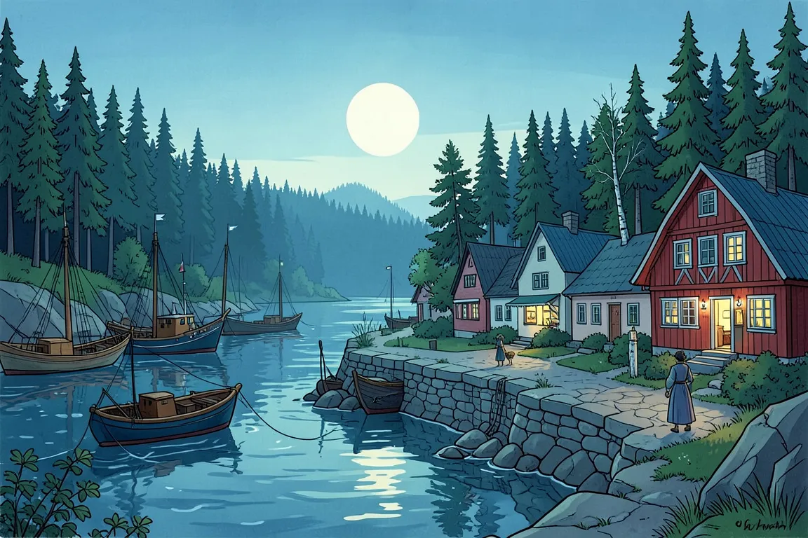

painting · 1880s–1900s · also: National Romantic painting, Golden Age of Finnish Art, Skagen and Gothenburg school
Painting that builds a nation's image from its own land, myths and home life: pale northern light, lake and forest, folk legend and the farm room. Painters trained in Paris bring back plein-air method and apply it to Nordic subjects.

Core thesis
A picture can give a young nation a face by painting its own land, light, legends and home with the best methods of Europe.
Design principles
Paint the northern landscape in a cool, pale key: a long horizon, a low sun and a sky that covers 40–60% of the height.
Use a clear, decorative outline on figures and legends: a contour of 2–4mm and flat or lightly modelled fields of colour.
Simplify the scene into 3 to 5 large shapes (lake, forest wall, sky, a figure) and tilt the space slightly flat.
Draw on national material: epic poem, folk costume, farm interiors, birch, spruce and granite.
Paint the interior as a bright, tidy, white-and-red room with natural window light and a pattern of folk textiles.
Keep the colour restrained and cool, with one warm accent in red ochre, a wooden building or a costume.
Combine plein-air observation with a symbolist or decorative arrangement: the scene is true, and the layout is designed.
Anti-patterns
Tropical or Mediterranean colour and a warm golden sun
Classical gods, Roman ruins and Italianate scenery
Heavy dark chiaroscuro studio lighting
Busy ornate frames of detail without a clear silhouette
Urban, industrial or cosmopolitan modern-life subjects
Sentimental detail that hides the simple structure of the land